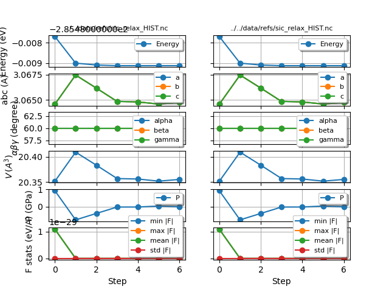
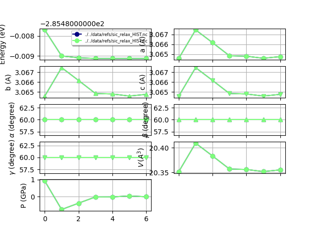

Note
Click here to download the full example code or to run this example in your browser via Binder
Multiple Structural relaxations¶
This example shows how to analyze the results of multiple structure relaxations with the HIST robot.
- 
- 
Out:
formula natom alpha ... initial_fmean initial_fstd initial_drift
sic_relaxation Si1 C1 2 60.0 ... 1.095144e-29 0.0 0.0
same_hist Si1 C1 2 60.0 ... 1.095144e-29 0.0 0.0
[2 rows x 26 columns]
<Figure size 640x480 with 10 Axes>
from abipy import abilab
import abipy.data as abidata
files = [
abidata.ref_file("sic_relax_HIST.nc"),
abidata.ref_file("sic_relax_HIST.nc"),
]
# Build HIST robot from paths, use user-selected labels.
robot = abilab.HistRobot.from_files(files, labels=["sic_relaxation", "same_hist"])
# Get dataframe with most important results.
print(robot.get_dataframe())
robot.gridplot()
# Use combiplot to compare the results
# (meaningless in this case as we are using the same HIST file).
robot.combiplot()
Total running time of the script: ( 0 minutes 1.501 seconds)